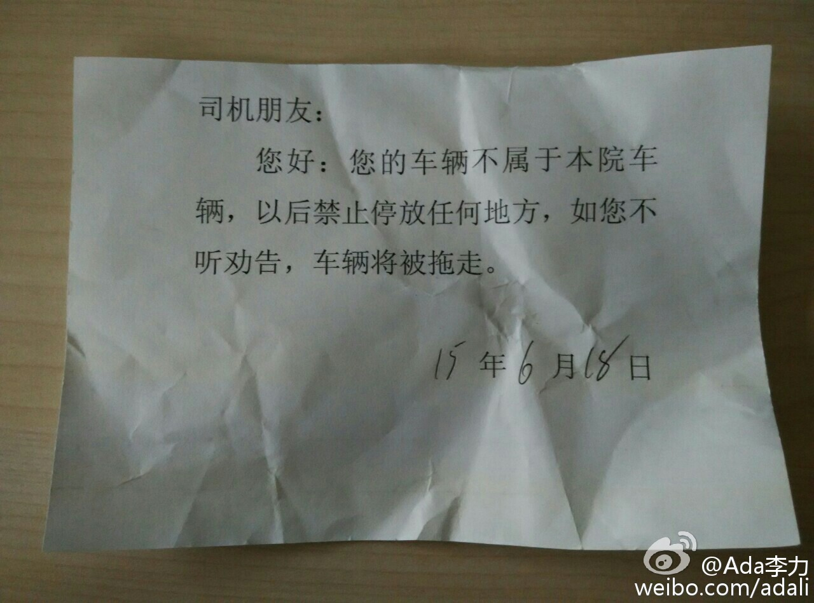

这张告示的来源：是我准备停车入位时，大楼保安上来问我是否本院车，我说不是，来看朋友，他犹豫下，说那你停吧，我给你贴个条。我走了后一直在想是什么条，肯定不会是罚款条，是计时条么，可是收费是在院子大门口呀。等回去取车时，发现是个警示条。 
觉得很多懒政跟这个情况很类。如果大院车位紧张，完全可以在大门处就禁止外面车辆进入。如果不允许外院车辆在特定位置停车，就给出明显告示，然后告知可以在哪儿停。但这告示只是吓唬“禁止停放任何地方，不然拖走”，执行上也不给力。@Ada李力:这张告示的来源：是我准备停车入位时，大楼保安上来问我是否本院车，我说不是，来看朋友，他犹豫下，说那你停吧，我给你贴个条。我走了后一直在想是什么条，肯定不会是罚款条，是计时条么，可是收费是在院子大门口呀。等回去取车时，发现是个警示条。